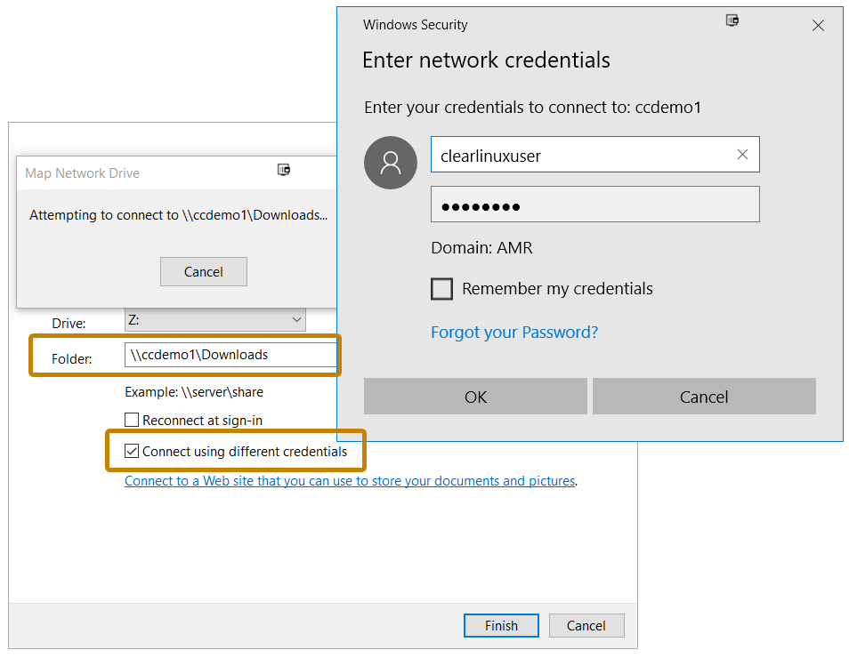

Enable simple file sharing with a Windows* machine using Samba*
This tutorial describes how to enable simple file sharing from a system running Clear Linux* OS to a Windows machine using Samba. For more advanced sharing, refer to the Samba guide.
Prerequisites
This tutorial assumes you have installed Clear Linux OS on your host system. For detailed instructions, follow the steps in Install Clear Linux* OS from the live desktop.
Before you install any new packages, update Clear Linux OS with the following command:
sudo swupd update
Set up file sharing
Log in and get root privileges.
sudo -s
Add the storage-utils bundle, which includes the Samba binaries.
swupd bundle-add storage-utils
注解
The os-clr-on-clr bundle also includes the Samba binaries.
Create a configuration file called
/etc/samba/smb.conf. In this example, [Downloads] enables a folder share with a specific user. [Documents] enables a folder share with any user. The example assumes that a user account clearlinuxuser already exists.If valid users is not specified, then anyone with a user account on the machine and with their Samba password already set can access the folder. However, the account is only able to access files and folders for which they have appropriate permissions.
Use chown or chmod to change either the owner of the file or the permissions to allow other users to access the file.
[Global] map to guest = bad user [Downloads] path=/home/clearlinuxuser/Downloads read only = no guest ok = no valid users = clearlinuxuser [Documents] path=/home/clearlinuxuser/Documents read only = no browsable = yes guest ok = yes
Enable the Samba daemon to start every time.
systemctl enable smb systemctl start smbUse smbpasswd to add the initial password for the user account to access the share. Be aware that Samba maintains its own list of passwords for user accounts. The Samba password list can be different than the password used to log in.
smbpasswd -a clearlinuxuser
Setup is complete and a Windows machine on the same network can access the
shares. Windows uses the format \\[server IP or hostname]\folder to
access shares. Access the shares directly with Windows Explorer or by
mapping a network drive.
Use the IP address of the Clear Linux OS machine for an easy access method. If the Clear Linux OS machine is behind an Active Directory domain controller or a DNS server, use the hostname of the Clear Linux OS machine. For other ways to access shares using a hostname instead of an IP address, see Chapter 7 of the Samba guide.
Map Clear Linux OS drive in Windows
Open Windows Explorer and click on the left sidebar on This PC to change the options available at the top.
Click the Map Network Drive icon and enter the path in the format:
\\[server IP or hostname]\[shared folder]Check the box Connect using different credentials. Enter the Samba user clearlinuxuser and the password created with smbpasswd. See Figure 1 for details.
Figure 1: Map a network drive in Windows Explorer.
{kind=link}
When complete, Windows Explorer displays the share drive as shown in Figure 2.
{kind=link}
Figure 2: View a share drive in Windows Explorer.